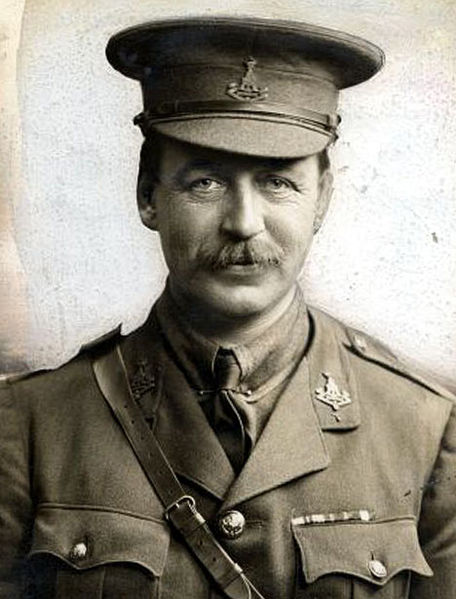
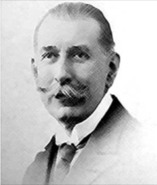

Tale of a Lost Village

The village folk of Abil al-Qamh (آبل القمح) tended to a land rich in wheat and history. A church and a mosque stood amid mud and stone houses, while ancient ruins from as early as 2900 BC lay nearby. The village was nestled between a vibrant network of Christian, Sunni and Shia villages, three km south of the Litani river and 40 km north of the Sea of Galilee. The mountain region of Jabal ‘Amil separated it from the waves of the Mediterranean that lapped against the sands of the ancient city of Tyre.
We interviewed the son of one of the villagers. Atef Choufani, 57, spent most of his life following a relentless current of displacement because a minute change in a border frontier rendered his hometown an overgrowth of grass and trees.
It starts with a French and British diplomat. In 1916, Sir Mark Sykes  Mark Sykes (1879 – 1919)an English traveller, Conservative Party politician and diplomatic adviser, particularly with regard to the Middle East at the time of the First World War. Evidence suggests that Sykes had a hand in promoting the Balfour Declaration issued on 2 November 1917. He would, however, later write to Faisal I of Iraq in which he expressed this view of the Jews: "... this race, despised and weak, is universal and all powerful and cannot be put down." Wikipedia and François Georges Picot  François Georges Picot (1870 – 1951)a French diplomat who signed the Sykes–Picot Agreement during World War I, with the Englishman, Sir Mark Sykes, dividing up the Ottoman Empire into British, French and, later, Russian and Italian spheres of influence. He was responsible along with Sykes for the annexation of Arab lands and their incorporation into British and French empires. Wikipedia set plans in motion for consulates in the region to divide the soon to be destroyed Ottoman empire into colonial mandates. Officials gathered in the back-rooms of their Middle Eastern offices, armed with rulers, pencils and paper, and gave birth to nation-states that would be made from the same mold as the colonies. Those fateful markings on the page were the product of a whirlwind of negotiations.
Winston Churchill used to boast that in 1921 he created the British mandate of Transjordan “with the stroke of a pen, one Sunday afternoon in Cairo. ”
“I had a well-spent morning at the office making out the southern desert frontier of the Iraq, ” Diplomat, archeologist and spy Gertrude Bell wrote to her father on Dec 4 1921
But the agreement would forever be stored in popular memory as deception of monumental proportions. To the Arab world, the secret agreement that demarcated Arab states embodied the duplicitous face of imperialist designs on the region. For the Europeans cooked up the Sykes-Picot agreement at a time when the British promised Arabs a unified and independent existence in a famous series of letters known as the Hussein-McMahon correspondence.
Sir Henry McMahon, the British High Commissioner in Egypt had promised King Hussein of the Hejaz Arab sovereignty over a territory bounded by the southern border of Turkey in the North, in the East by Persia and the Persian Gulf, in the West by the Mediterranean Sea, and in the south by the Arabian Sea. This would be granted in exchange for Hussein's help in dismantling Ottoman rule over the region.
Prince Faisal, son of Hussein, foretold the betrayal and unsuccessfully fought for the independence of a united "Greater Syria", which included Iraq, Palestine, Syria and Transjordan. The San Remo conference of 1920 carved out Syria as a French mandate, so that inhabitants of the region were subject to either French or British rule, and by the 1940s, to states bound by these spheres of influence.
The Peace of Westphalia (1648) that ended the Thirty Years’ War in The Holy Roman Empire, created European nation-states on the basis of political self-determination.
But the newly born Arab nation-states, which the European diplomats may have seen as a natural byproduct of disintegrated empire, coincided primarily with foreign geopolitical interest. Border crossings and the red tape associated with them constrained age-old trade routes, train networks, and familial ties. In some territories, a single brushstroke on the map would render swathes of fertile and culturally significant lands off-limits to the Arab world.
On a Spring morning in 1922, inhabitants of Qabil al-Amh were handed identity cards by the French census stating that they were Lebanese citizens.
Meanwhile, Zionist forces who were setting the stage for a state of their own in historic Palestine, were eyeing the Litani and Hasbani rivers that were placed squarely in French mandate Lebanon. They petitioned to move the border to capture the water resources. After six years of negotiations, British delegate, Lieutenant Colonel Stuart Newcombe and his French counterpart Lieutenant Colonel N. Paulet designed a frontier that was considered a compromise between French demands that numerous Shia villages in the region remain within the same territory, and British sympathies with Zionist aspirations.
Zionists setting the stage for a Jewish state in Palestine petition for the northern Palestine boundary to fall just before Sidon.
Sykes and Picot had set the border in a way that adhered to the biblical interpretation of Palestine as Dan to Bir Seba’, but Zionists contended that such a territory would not grant it vital resources offered by rivers in territory given to Lebanon.
While the French insisted on sticking to the Sykes-Picot line, the British were keen on giving the Zionists access to the Litani (the longest river inside modern day Lebanon).
The Meinertzhagen Line was also considered to fulfill Britain’s security requirements. France, on the other hand, argued that “historical and natural” boundaries of “Greater Lebanon” should include the water sources enclosed by the Sykes-Picot line.
A commission tasked with resolving the French-British-Zionist border dispute draws the final demarcation line, which is seen to cause minimal disruptions to local community and incorporate some Zionist aspirations. It captures part of the Hasbani river.
Twenty-four villages that were granted Lebanese citizenship in the French census of 1922 are now part of the British mandate of Palestine.
A commission tasked with resolving the French-British-Zionist border dispute draws the final demarcation line, which is seen to cause minimal disruptions to local community and incorporate some Zionist aspirations. It captures part of the Hasbani river.
Twenty-four villages that were granted Lebanese citizenship in the French census of 1922 are now part of the British mandate of Palestine.
The village folk of Abil al-Qamh, as well as those of 23 other villages, were transformed from Lebanese to Palestinian citizens nearly overnight. The encroaching boundary now included parts of the two rivers.
But the national metamorphosis would not come to affect the village folk for another 26 years. They continued to roam the mountainous terrain cradled by the coveted rivers unabated, trading and marrying between their network of villages. The border still had no physical reflection.
Atef Choufani’s father married from the mountainside town of Deir Mimas, placed safely inside the French mandate of Lebanon. Its cobblestoned streets, winding alleyways, its dozen convents draped the slope of a large hill.
When he looks back at this with modern nation-state informed hindsight, Atef claims his mother had a more typically Palestinian accent than his father, who sounded more Lebanese, with less stress on his Qs and a more nasally, or slanted use of vowels.
Atef believes that this stems from the arrangement of trade and social networks in the region where cultural, economic and religious ties often over-rided geographic proximity. Abil al-Qamh inhabitants were more likely to associate with communities further north, while Deir Mimas looked to the South for marriage and trade.
When Zionist militias forcibly depopulated Choufani's hometown to lay claim to most of mandate Palestine, the Lebanese government would not assent to his stay in Deir Mimas. In 1962, Atef Choufani’s family would become refugees twice over. First, from their town of Abil al-Qamh by Israel’s Operation Yiftach, which decimated the indigenous population of the village's district from 10,000 to a paltry 100. Second, from their social and cultural linkages of villages south of the Litani river by a Lebanese government that paid heed to the erratic southern boundary. They were moved north to the Lebanese mountain city of Nabatiyeh. “They told us we were refugees and so we had to follow the rest of the people from our village,” Atef recalls.
But the then over-populated Nabatiyeh was just a pit-stop. A year later, the government hauled the family and their village-folk into the Dbayeh refugee camp in northern Beirut.
“At first, we stayed in [nearby neighborhood] Sin el-Fil. It seems our parents were trying to avoid ending up in the camp, but we found that we couldn’t afford this.”
They gave in to the relentless current of their accidental refugee-hood and moved into the camp, where Atef would spend the larger part of his young adult years.
The family lived under corrugated roofs, which made the summers hotter and the winters colder, and the rattling of the raindrops against the metal roof made a good night’s sleep hard to come by. They had no private bathrooms, and an open sewage system meant that, after a rainy night, a trip to school involved trudging through human waste.
In 1975, Lebanon plunged into a bloody civil war that would pit right-wing Christians against a predominantly Muslim left-wing coalition of militias which included the Palestinian Liberation Organization (PLO). Dbayeh’s refugee camp consisted of the only Palestinian population center in the Christian enclave of north Beirut. A bloody battle ensued to expel them from the area.
Seventy Palestinians in the mostly Christian camp were killed in what many described as a massacre that involved the summary execution of children. The camp fell, and the twice or thrice refugees were left to seek shelter once again.
Atef and his family escaped into the protection of the PLO’s war-time allies in Western Beirut, and managed to win a scholarship at the American University of Beirut. He pursued his studies in engineering, one of the professions barred to Palestinians in Lebanon, guaranteeing his eventual departure from the country. From Beirut, he was shuttled again to Abu Dhabi, the only place in the Gulf that received Palestinian refugees. “I knew I didn’t want to stay in Lebanon. I needed to be able to support my family. So I knew there was absolutely no way I would stay,” said Atef.
The business he worked for, the Consolidated Contractor’s Company (CCC), was founded by Palestinian refugees Hasib Sabbagh, Said Khoury, and Kamil ‘Abd al-Rahman. It is considered the patron of the Palestinian community in the city of its headquarters, Athens, Greece. Atef was soon transferred to CCC’s base in Greece, where he married a Palestinian woman from Nablus and taught his children about the Palestinian struggle from an early age.
“I consider myself to be from the Greater Syria,” said Atef referring to the land King Faisal bin Hussein presided over for four months in 1920 before being defeated by the French. Greater Syria is also the territory the majority of those surveyed in mandate-era Eastern Mediterranean Arab states expressed they wanted to adhere to in a survey dispatched by America’s Woodrow Wilson in 1919. “In the end, I know that the states were divided by not much more than simple lines,” he added.
Full Circle
The simple line of Paulet-Newcombe would again be employed as a geopolitical bargaining chip, though this time by local players. Throughout the 1980s and early 1990s, the powerful Shia parties of Amal and Hezbollah drew the public’s attention to the deviations from the armistice lines of 1920 that led to current boundaries. Seven predominantly Shia villages were unjustly robbed from a south Lebanon peopled by their co-religionists, party representatives argued. The mixed Shia-Christian village of Qabil el-Amh was one of these.
In 1994, Lebanon laid de facto claim to the seven villages (قرى السبع), granting the former inhabitants and their descendants Lebanese nationality. It was seen as a testament to the rising power of the Shia parties, especially since the remaining non-Shia 16 villages left behind by the 1923 deviations were excluded from the territorial claim.
Atef was able to dispose of his refugee travel documents that jerked him from place to place throughout most of his life, in exchange for citizenship. He is no longer a non-citizen of Palestine, but he also does not identify as Lebanese. He owes this, he says, to his formative years in the refugee camp in Dbayeh.
More than a country carved out on a map, more than a village wedged between, and later destroyed, by indecisive borders, Palestine for Atef transcends the physical realm. It represents a struggle against the dispossession of 700,000 Palestinians by the state of Israel, and the continued occupation of millions in the West Bank and Gaza.
“Palestine is larger than the village. It is a cause and it is a just cause. That’s what Palestine is to me.”